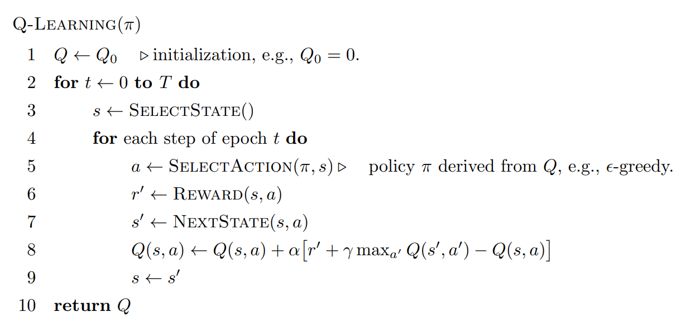
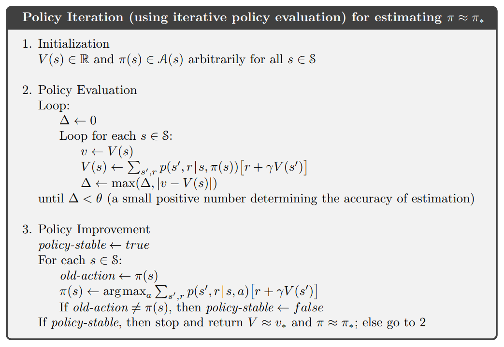
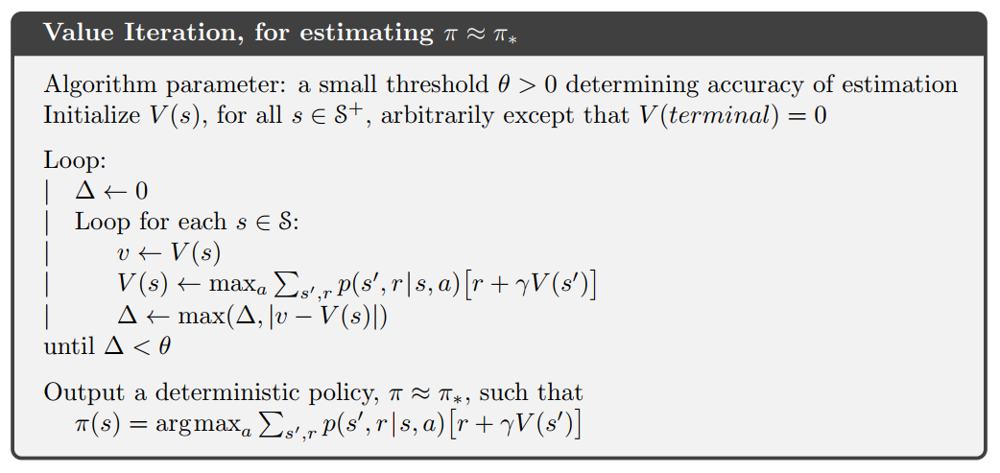

Q-Learning
MDP
\(\displaystyle V_{\pi}(s)=\mathbb{E}_{s_t,a_t}[\sum_{t=0}^{\infty}\gamma^tR(s_t,a_t)|s_0=s]\) 表示从当前状态出发的期望收益
\(\displaystyle Q_{\pi}(s,a)=R(s,a)+\mathbb{E}_{s_t,a_t}[\sum_{t=1}^{\infty}\gamma^tR(s_t,a_t)|s_1=s,a_1=a]\) 表示从当前状态采取某动作的期望收益
\(R(s,a)\) 表示状态 \(s\) 采取动作 \(a\) 的收益
\(\gamma\in[0,1)\) 是折扣因子, 为了累计收益不发散到 \(\infty\)
累积的收益 \(G_t=r_t+\gamma r_{t+1}+\gamma^2 r_{t+2}+\cdots\)
表示最关心当前的收益, 其次是未来
Bellman Equations
一般的贝尔曼方程
迭代形式为
贝尔曼最优方程
由
得出最优方程:
迭代形式为
贝尔曼最优算子
在确定性环境下:
那么 \(Q^{* }\) 为算子的一个不动点
即
在确定性环境下:
线性规划
用线性规划解决贝尔曼方程问题
对于 \((1)\) 式的最大化形式, 可以转换成
这变成了一个线性规划的约束条件
所以我们想找到最优的 \(V^{* }(s)\), 就需要让不等号取等
也就是要最小化 \(\set{V^{* }(s)|s\in S}\) 中的所有元素
所以转化成 LP:
其中 \(\alpha(s)\) 是任意的系数, 满足
例如取
一些定理
\(\underline{定理1}\)
\[(\forall s\in S, \mathbb{E}_{a\sim \pi'(s)}[Q_{\pi'}(s,a)]\geq \mathbb{E}_{a\sim \pi(s)}[Q_{\pi}(s,a)])\Longrightarrow (\forall s \in S, V_{\pi'}(s)\geq V_{\pi}(s))\]
\(\underline{证明}\)
将 \(V_{\pi}(s)\) 展开, 迭代着写一下就行了
\(\underline{定理2}\)
\(\pi\) 是最优的当且仅当对于 \((s,a)\in S\times A\) 满足
\[a\in \argmax_{a'\in A}Q_{\pi}(s,a')\]
\(\underline{证明}\)
\(\Longleftarrow\)
构造一个 \(\pi'\) 使得 \(\pi'\) 选择 \(\argmax_{a'\in A}Q_{\pi}(s,a')\) 而 \(\pi\) 不选择
这会得出对某个 \(s\) 满足 \(V_{\pi'}(s)>V_{\pi}(s)\)
所以不是最优
\(\Longrightarrow\)
如果 \(\pi'\) 不是最优, 那就有一步 \(s\) 不选择最优的 \(\argmax_{a'\in A}Q_{\pi}(s,a')\)
所以 \(\pi'\) 就不满足右边条件
\(\underline{定理3}\)
有限 MDP 一定存在最优策略 \(\pi^*\)
\(\underline{证明}\)
存在一个 \(\pi^{* }\) 使得他能最大化 \(\sum_{s\in S}V_{\pi^{* }}(s)\)
如果这个 \(\pi^{* }\) 不是最优, 就存在某个状态 \(a\not\in \argmax_{a'\in A}Q_{\pi^{* }}(s,a')\)
那么构造选择 \(\argmax_{a'\in A}Q_{\pi^{* }}(s,a')\) 的策略 \(\pi\), 根据定理1 就会存在 \(V_{\pi}(s)\geq V_{\pi^{* }}(s)\), 那么与 \(\pi^{* }\) 能最大化 \(\sum_{s\in S}V_{\pi^{* }}(s)\) 矛盾
算法
选择策略
使用 \(\epsilon-\text{greedy}\), 以 \(\epsilon\) 的概率尝试新动作, \(1-\epsilon\) 概率使用当前动作价值函数选择动作
更新价值函数
使用 \(new = old + step \times (target - old)\) 的方式来迭代更新 \(Q(s,a)\)
所以在确定性环境中有
根据 \((3)\) 式, 即
算法流程

收敛性
假设第 \(n\) 步得到的动作价值函数为 \(Q_n\), 我们要证明
我们定义
那么写出 \(Q_{n+1}\) 的表达式
可以发现 \(Q_{n+1}(s,a)=(\Gamma Q_n)(s,a)\)
同时
所以
同时
所以
而常数 \(\alpha\gamma+1-\alpha<1\)
所以 \(\Delta_n\) 收敛到 \(0\)
即 \(Q_n\) 收敛到 \(Q^{* }\)
不确定性环境的证明类似
Deep Q-Learning Network
强化学习的策略在 Q-Learning 里是以表格的形式存在
如果数据量变大, 表格也会变大
所以退而使用神经网络拟合这个策略函数
Policy Iteration
与 Q learning 一样是近似值函数方法
(approximate value function method)
包括 policy evaluation 和 policy improvement 两个部分

policy evaluation
可以看到 \(V(s)\) 直接按照一般贝尔曼方程更新:
由于 \(\pi\) 可以是确定性的策略, 所以 \(\sum_{a\in A}\pi(a|s)\) 这一项直接取 \(1\)
其中 \(a=\pi(s)\)
当值函数在每一个状态与上一步的差都小于一个阈值 \(\theta\), 说明收敛, 停止评估过程
policy improvement
按照上面类似的方法更新策略函数:
最后输出一个确定性策略
Value Iteration
另一个近似值函数方法

在第一个循环里, 不再使用确定性策略 \(\pi(s)\) 在确定 \(a\), 而是直接枚举 \(a\), \(V(s)\) 取最大
最后不再循环, 直接输出更新后的确定性策略 \(\pi(s)\)
Importance Sampling
definition
我们要计算某个目标函数 \(f(x)\) 在某分布 \(p(x)\) 下的期望:
但是 \(p(x)\) 采样困难
所以可以用另一个易采样分布 \(q(x)\) 来估计原本的期望:
其中 \(\displaystyle \frac{p(x)}{q(x)}\) 是重要性权重
注意从 \(p\) 中采样 \(x\) 可能会相当困难, 但是计算 \(p(x)\) 相对简单, 这就是重要性采样的作用
采样得到的样本为
满足
对于 \(s_q\), 当取 \(q^{* }(x)=\frac{p(x)|f(x)|}{Z}\) 时方差最小
其中 \(Z\) 是标准化常数, 保证 \(q^{* }\) 和为 \(1\)
事实上, 当 \(f(x)\) 不变号, \(\text{Var}[s_{q^{* } }]=0\)
意味着最优的情况下只需要一次采样
当然这个不实际的
不同的 \(q\) 取法可以降低方差
biased importance sampling
不要求 \(q,p\) 的标准化
其中 \(\tilde p, \tilde q\) 是 \(p,q\) 的未标准化版本, \(x^i\) 是从 \(q\) 采样得到
这个采样是有偏的, 即 \(\mathbb E[s_{BIS}]\not= s\)
但是由于
所以在 \(n\to\infty\) 时分母趋向于 \(1\), \(\lim_{n\to\infty}s_{BIS}=s\)
所以是渐近无偏, 实际有偏
how to choose \(q\)
一般 \(q\) 选择一个简单的分布方便采样
但是如果 \(x\) 维数很高, 那么很可能出现 \(q>>p|f|\) 的情况, 使得采样过小导致无效
同时极小可能会出现 \(q<<p|f|\), 导致某次采样过大
off-policy
需要一个生成数据用的策略: \(\mu(a|s)\)
待优化的目标策略: \(\pi(a|s)\)
可以用重要性采样做 Off-Policy Policy Gradient:
KL divergence
见 博客
Policy Gradient Methods for Reinforcement Learning with Function Approximation
见 博客
Approximately Optimal Approximate Reinforcement Learning
见 博客
TRPO
Trust Region Policy Optimization
DPO
Direct Preference Optimization
PPO
Proximal Policy Optimization
GRPO
Group Relative Policy Optimization
参考:
- 知乎
- Foundations of Machine Learning
- Policy Gradient Methods for Reinforcement Learning with Function Approximation
- Approximately Optimal Approximate Reinforcement Learning